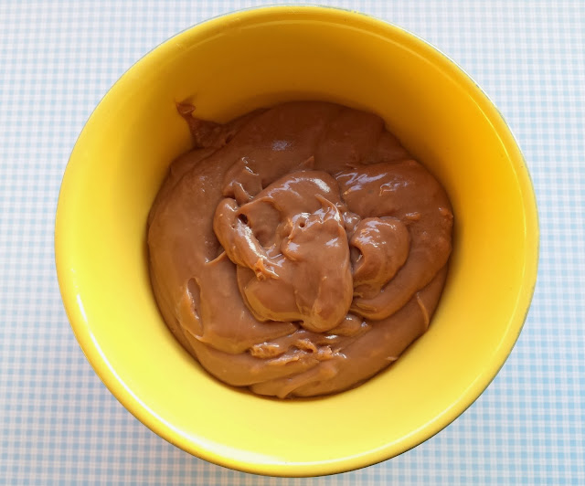
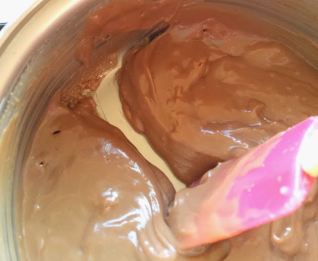

Brigadeiro
 src
src
Description
Brigadeiro is probably my favorite sweet, which is saying a lot for a little ant like me.
This brazilian dessert is commonly eaten during birthday parties cutely rolled up like the picture above, or just with a spoon at home when you're craving something sweet - in my opinion the best way of eating it - since it is so simple to make! I think everyone should try brigadeiro at least one in their life... If you haven't, you're missing out!
Total time: 15 minutes Cuisine: Brazilian
Calories: ... Author: My mom
Ingredients
For party brigadeiro (to roll up)
- 1 box/395 g condensed milk
- 1 box/ 200 g milk cream
- approx 3 tbsp chocolate powder - 50% cocoa
- 1 tbsp butter

src
For spoon brigadeiro (the best & simplest)
- 1 box/395 g condensed milk
- Whatever chocolate powder (as many as it takes for it to get a nice chocolate-y color)
- 1 tbsp butter
Steps
The steps are more or less the same for each, the only difference is that for the party brigadeiro you should let it harden more so that it can be rolled up later!
- Mix all ingredients together in a pot until they are all combined!
- Bring it to the fire at a medium flame and stir continuously.
- For party brigadeiro:
- Since your brigadeiro will be rolled up later, you have to stir until it hardens a bit so it won't stick to your hands. You'll know it's good if you run your spatula/spoon through the bottom of the pot and it leaves a clean 'trail' (see photo below), not sticking to the bottom. Then, let it cool so you can roll them up.

- To roll them, just pick up the amount you'd like each brigadeiro to be with a spoon and roll that up into a little ball with your hands - if it's too sticky, you can put some butter or water on your hands to help!
- For spoon brigadeiro:
- If you want to eat your brigadeiro with a spoon like a pro, you don't have to get this trail! If it's not too liquid-y, more like a paste, you can stop stirring and just let it cool.
- Enjoy it however you like!